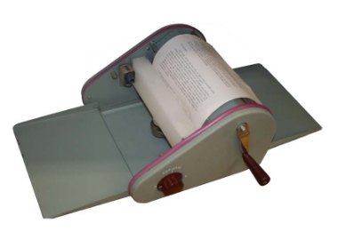
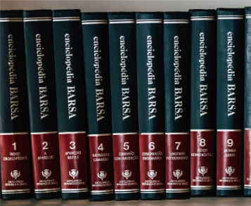
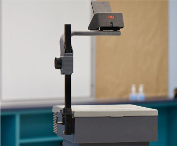
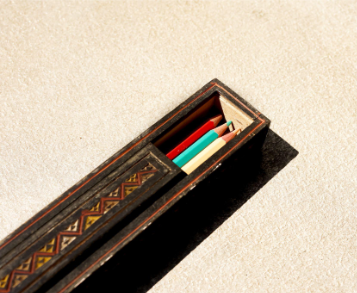
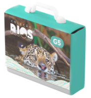
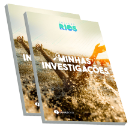
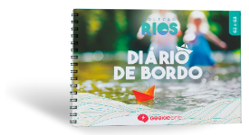
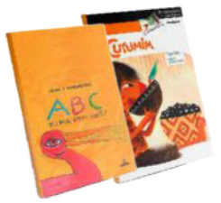
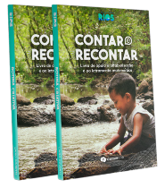
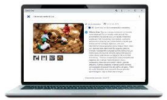

Experiência Amadeus · Educação Infantil 2027
Experiência Amadeus · Educação Infantil 2027
Como você aprendeu no seu tempo de escola?

Atividade mimeografada

Pesquisa na Barsa

TV e retroprojetor

Estojo de madeira
E como o seu filho aprende hoje?
O mundo sempre mudou, mas nunca tão rapidamente.
O mundo do trabalho vai mudar.
dos empregos que vão existir em 2030 ainda não existem
das habilidades exigidas no trabalho vão mudar até 2030
Fontes citadas pela Geekie: Siminova (2025) · Você RH
A IA processa informações em escala. Ela não ajuda uma criança a entender como pensa.
Fonte citada pela Geekie: Nord Anglia, "Teaching the skills AI can't replace" (2026)
Quem é a Geekie?
escolas
estudantes
Única plataforma de aprendizagem adaptativa credenciada pelo MEC.
Do Maternal II ao Grupo V
A criança no centro da aprendizagem.
Inspirada na abordagem Reggio Emilia: liga as descobertas de cada criança às da turma.
Rotinas de pensamento do Project Zero (Harvard), que instigam a curiosidade natural da criança.
Vivências que viram aprendizado.
Vivências lúdicas conectadas à BNCC.
Conquistas acompanhadas em tempo real.
Documentação e formação para as professoras.
O que chega na mochila.

1 maleta anualembalagem especial
2 blocos Minhas Investigações
1 diário de bordo anual
2 livros de literatura
2 livros Contar e RecontarGrupo IV e Grupo V
Portfólio digitalGeekie OnePortfólio digital
A família acompanha o seu filho de perto e percebe a profundidade do que ele está aprendendo.

Acreditamos em uma formação que prepare para o desconhecido do mundo.
Muito obrigado!
Centro Educacional Amadeus · 30 anos